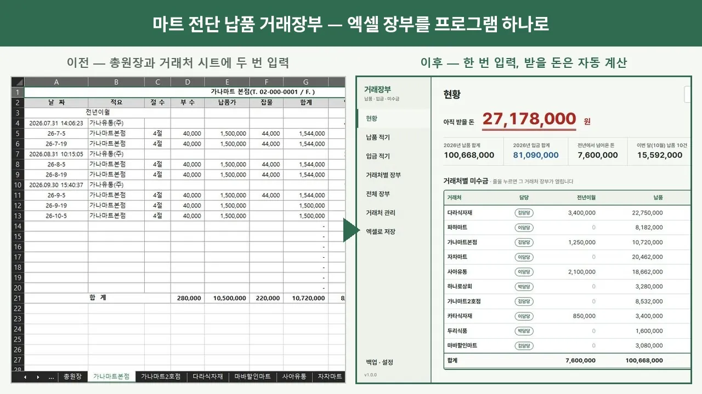
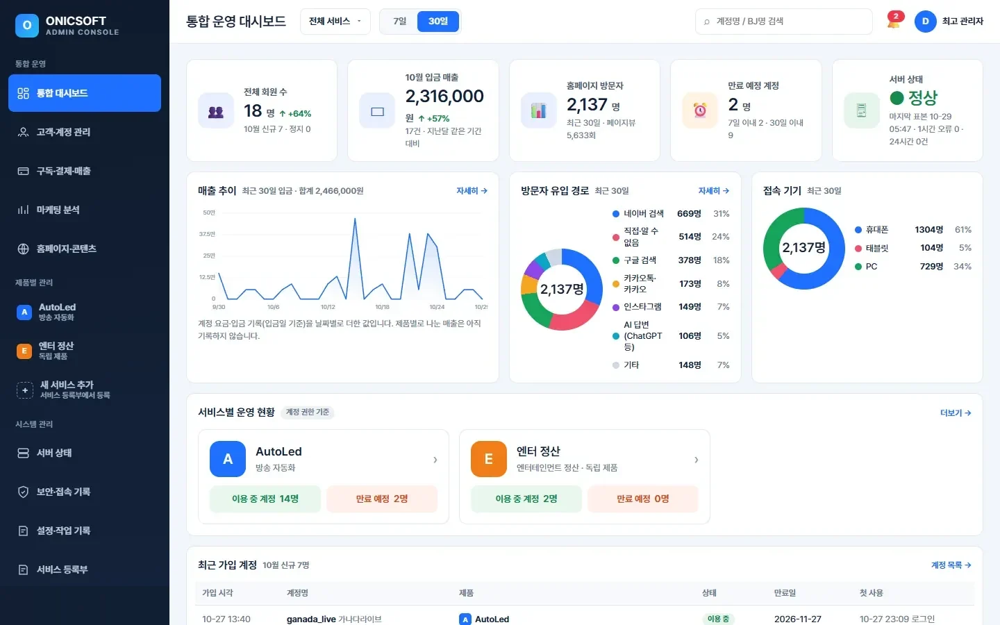
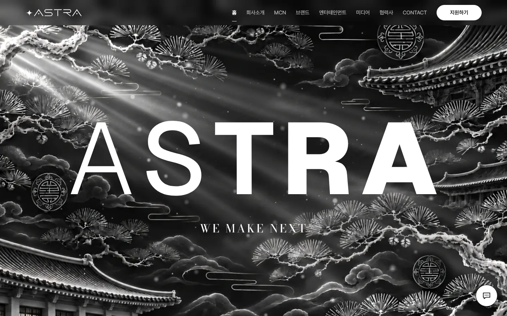
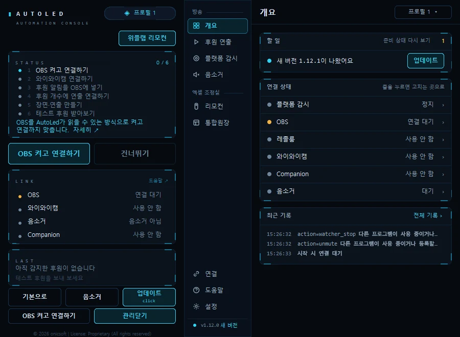
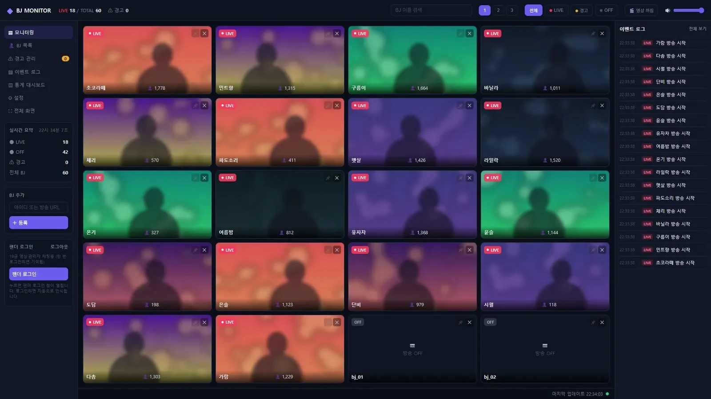
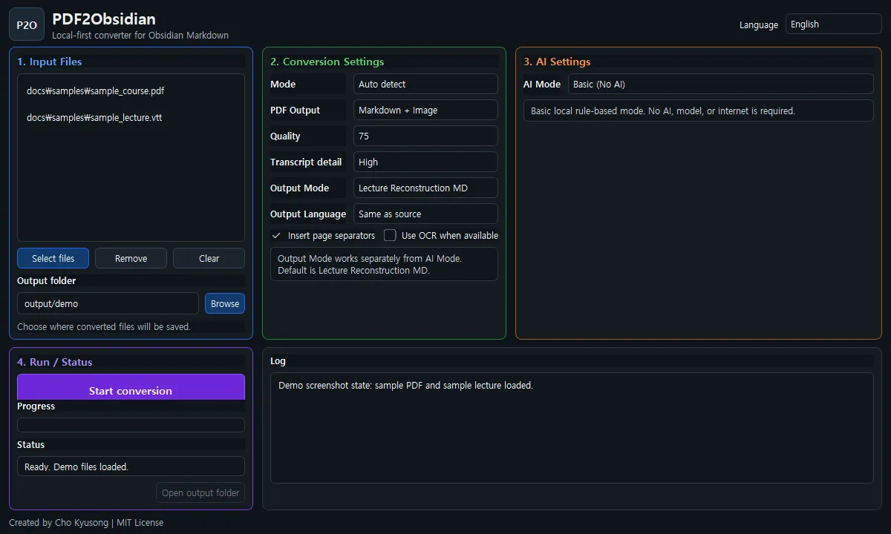
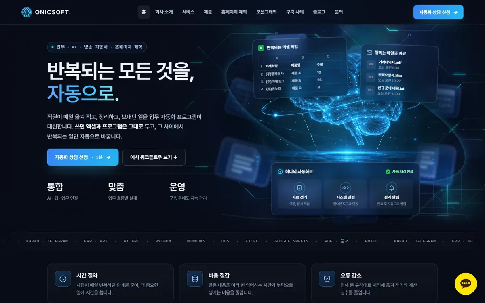
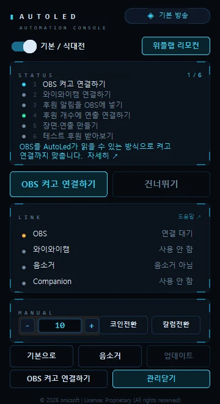
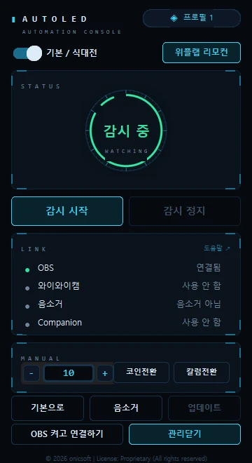

01
프로그램3
설치해서 쓰는 Windows 프로그램과 도구입니다. 방송 자동화 제품 AutoLed는 직접 판매하고 업데이트까지 운영합니다.
01 — 요약
방송 자동화 제품, 업무 자동화 프로그램, 서버를 기획부터 운영까지 한 사람이 맡습니다. 홈페이지와 영상도 직접 만듭니다. 코드는 AI 코딩 도구와 함께 쓰고, 무엇을 만들고 언제 내보낼지는 제가 정합니다.
2026년 11월 15일 기준. 테스트 수는 각 저장소 기록, 경력은 이력서 기준입니다.
02 — 하는 일
방송 자동화 제품을 팔면서, 회사 업무를 줄이는 프로그램과 서버를 직접 만들고 운영합니다. 홈페이지와 영상도 직접 만듭니다. 그림을 누르면 아래 작업 목록이 그 분류로 정리되고, 이름표를 누르면 상세 페이지가 열립니다.
설치해서 쓰는 Windows 프로그램과 도구입니다. 방송 자동화 제품 AutoLed는 직접 판매하고 업데이트까지 운영합니다.




03 — 모든 작업
프로그램, 업무 자동화, 홈페이지, 서버, 모션그래픽으로 나눠 정리했습니다. 줄을 누르면 화면, 영상, 직접 눌러 보는 데모를 모은 상세 페이지가 열립니다. 비공개 저장소는 핵심 로직 없이 무엇을 만들고 어떤 결과가 났는지만 소개합니다. 공개 코드는 PDF2Obsidian 저장소에서 볼 수 있습니다.

02CCTV · BJ 방송 통합 관제BJ 최대 60명의 방송을 한 화면에서 지켜보는 관제 프로그램
03PDF2ObsidianPDF와 강의 자막을 옵시디언 노트로 바꾸는 도구
 05납품 거래장부두 번씩 적던 엑셀 장부를, 한 번 적으면 끝나는 프로그램으로
05납품 거래장부두 번씩 적던 엑셀 장부를, 한 번 적으면 끝나는 프로그램으로
09ASTRA 엔터테인먼트 홈페이지엔터 회사 홈페이지 8쪽, 직접 눌러 보는 움직이는 시안04 — 대표 작업
설명서를 읽지 않아도 됩니다. 연결할 장비와 다음 할 일을 순서대로 보여 주고, 끝난 단계는 지워 나갑니다.

팬더TV, SOOP, 투네이션, 위플랩, 펀네이션 후원 알림을 지켜봅니다. 지금 상태는 가운데 원 하나로 보입니다.

후원 개수에 맞춘 OBS 장면 전환, LED 칼럼, 조명과 카메라, 배경음악 음소거를 실행하고, 끝나면 원래 장면으로 돌려놓습니다.

음원 파형 위에 장면, 조명, 카메라 블록을 놓는 Timeline 편집기. 자동 연출 만들기로 초안을 한 번에 깝니다.
관리센터에서 연결, 매핑, 감시, 설정을 한곳에서 봅니다. 새 버전은 앱 안에서 알리고 업데이트하며, 계정은 직접 만든 서버가 확인합니다.
05 — 일하는 방식
코드는 Claude Code, Codex 같은 AI 코딩 도구와 함께 씁니다. 무엇을 만들지, 무엇을 공개할지, 언제 내보낼지는 제가 정합니다.
자동 테스트를 먼저 통과시키고, 실제 OBS나 실제 서버에서 한 번 더 확인한 뒤 배포합니다. 엔터 정산은 테스트 141개가 계산과 화면 버튼까지 봅니다.
서버를 직접 세우고, 멈추면 다시 켜지고 알림이 오게 둡니다. 백업은 암호화해 매일 받고, 매달 실제로 풀어 보는 복원 연습까지 자동으로 돌립니다.
제품 소스와 핵심 로직은 비공개 저장소에 둡니다. 고객 정보와 서버 정보는 커밋 기록에도 남기지 않습니다. 이 페이지의 화면도 예시 데이터로 찍었습니다.
06 — 연혁
MCN과 방송 현장에서 6년 동안 일하며 필요한 프로그램을 직접 만들었고, 2025년 9월부터는 오닉소프트에서 제품으로 만들어 팝니다. 오닉소프트 뒤의 날짜는 각 저장소를 만든 달입니다.
방송 기술 회사 입사. 방송 장비 세팅과 방송 화면 디자인
MCN 회사 콘텐츠기획팀 팀장. 팀원 5명과 크리에이터 20명을 관리하며 정산, 계산서 확인, OBS·레졸룸 자동 전환 프로그램을 GPT와 Python으로 회사 안에서 만듦(정산 5시간 → 3분, 계산 실수 없어짐). 2021.10까지 방송 기술 회사와 겸직
오닉소프트 시작. 2025.11까지 MCN 회사와 겸직
AutoLed 개발 시작
PDF2Obsidian 공개
로그인 서버 운영, AutoLed 정식 배포, 회사 홈페이지
모션그래픽 작업실, 유튜브 채널 시작, 납품 업체 엑셀 장부 자동화
후원 데이터 집계 서버, 엔터 정산, CCTV 관제, 거래장부 프로그램
AutoLed 2.1.0, 엔터 회사 홈페이지 ASTRA 제작
07 — 기술
08 — 모션그래픽
HTML, three.js, Blender로 그리고 프레임마다 찍어 만든 효과입니다. 271종 가운데 일부를 옮겼습니다.
09 — 연락
Python 데스크톱 앱, 업무 자동화, 서버 개발과 운영, 웹과 영상 경험을 살릴 수 있는 일에 관심이 있습니다. 정규직, 계약직, 프리랜서 모두 가능하고 출근과 원격 모두 괜찮습니다. 입사하면 오닉소프트는 부업으로 운영합니다. 비공개 저장소의 자세한 내용은 면담에서 화면으로 보여 드릴 수 있습니다.